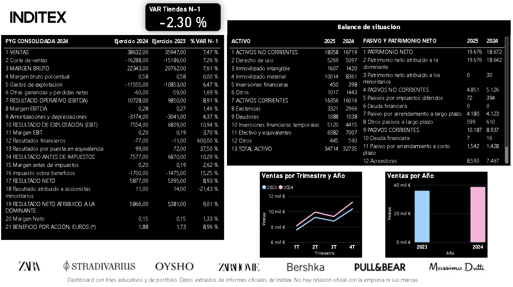
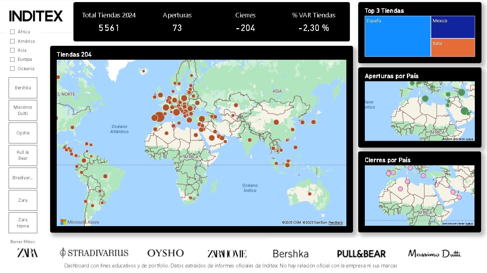

Contexto
Análisis de los resultados financieros consolidados de Inditex para los ejercicios 2023 y 2024, incluyendo evolución de ventas y gestión de la red de tiendas. Objetivo: generar insights financieros y operativos mediante un dashboard interactivo en Power BI.
Objetivos del análisis
- Analizar la evolución de las ventas y el resultado antes de impuestos.
- Identificar tendencias trimestrales y estacionalidad en el negocio.
- Evaluar la red de tiendas (aperturas, cierres y variación neta).
- Detectar los países con mayor peso en la operativa (top 3 por número de tiendas).
Estructura del Dashboard
- Resumen financiero: KPIs: ventas totales, crecimiento %, resultado antes de impuestos. Tabla de cuenta de resultados y balance. Gráficos de barras y líneas.
- Red de tiendas: Mapas interactivos por país, aperturas y cierres. KPIs: total de tiendas 2023 vs 2024, variación neta. Top 3 países en número de tiendas.
- Comparativa interanual: Evolución de ventas e ingresos por trimestre. KPI de crecimiento YoY.
- Versión móvil: Dashboard adaptado para visualización en dispositivos móviles.
Técnicas y herramientas
- Power BI: dashboard interactivo.
- DAX: medidas de ventas totales, resultado antes de impuestos, variación de tiendas y crecimiento interanual.
- Power Query: extracción y transformación de datos desde PDFs oficiales.
- Datos financieros y operativos: combinados en un solo modelo analítico.
Dataset
- Fuente: Informes oficiales de Inditex
- Resultados Anuales 2024 (PDF)
- Cuentas Anuales Consolidadas 2023 (PDF)
Principales insights
- Resultado antes de impuestos creció +10,29% y ventas aumentaron +7,47% respecto al año anterior.
- Estacionalidad de las ventas estable en ambos ejercicios.
- Top 3 países en número de tiendas: España, México e Italia.
- Países con más aperturas: Kazajistán, Uzbekistán y Baréin (total 7).
- España lidera los cierres, con 70 tiendas menos en el periodo analizado.
Valor añadido del proyecto
- Integración de datos financieros y operativos desde PDFs oficiales con transformación en Power Query.
- Creación de medidas DAX avanzadas para análisis financiero y operativo.
- Dashboard con KPIs, mapas y gráficos dinámicos por país y por año.
- Ejemplo práctico de aplicación de Power BI en análisis corporativo real.
Dashboard – Ejemplo de visualizaciones
Página 1 – Resumen financiero

Página 2 – Red de tiendas y aperturas/cierres
